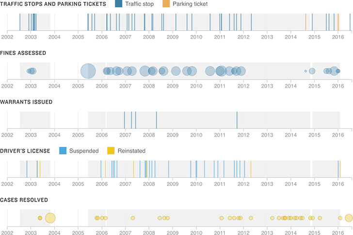

Cycles Of Traffic Stops, Fines And Suspensions
Between July 2002 and his death in July 2016, Philando Castile was stopped by police at least 46 times. Some traffic stops kicked off months- and years-long spirals of fines, driver’s license suspensions and more traffic stops that Castile would eventually pay off or settle in court. He was most often cited for driving on a suspended license or lacking proof of insurance.
